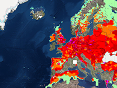

Example of how to make the overlay for the tileset.
Requirement: Tileset Control
Usage instructions:
Add this script to map GameObject.
Select overlay texture.
Add this script to map GameObject.
Select overlay texture.
TilesetOverlayExample.cs
/* INFINITY CODE 2013-2016 */
/* http://www.infinity-code.com */
using UnityEngine;
namespace InfinityCode.OnlineMapsExamples
{
[AddComponentMenu("Infinity Code/Online Maps/Examples (API Usage)/TilesetOverlayExample")]
public class TilesetOverlayExample : MonoBehaviour
{
// Overlay texture in mercator projection
public Texture texture;
// Overlay transparency
[Range(0, 1)] public float alpha = 1;
private Mesh overlayMesh;
private Material material;
private Collider tilesetCollider;
private void Start()
{
// Create overlay container
GameObject overlayContainer = new GameObject("OverlayContainer");
overlayContainer.transform.parent = transform;
// Init overlay material
MeshRenderer meshRenderer = overlayContainer.AddComponent<MeshRenderer>();
MeshFilter meshFilter = overlayContainer.AddComponent<MeshFilter>();
material = new Material(Shader.Find("Transparent/Diffuse"));
material.mainTexture = texture;
meshRenderer.sharedMaterial = material;
overlayMesh = meshFilter.sharedMesh = new Mesh();
overlayMesh.name = "Overlay Mesh";
overlayMesh.MarkDynamic();
overlayMesh.vertices = new Vector3[4];
// Subscribe to events
OnlineMaps.instance.OnChangePosition += UpdateMesh;
OnlineMaps.instance.OnChangeZoom += UpdateMesh;
// Init mesh
UpdateMesh();
}
private void UpdateMesh()
{
OnlineMapsTileSetControl control = OnlineMapsTileSetControl.instance;
if (tilesetCollider == null) tilesetCollider = control.GetComponent<Collider>();
Bounds bounds = tilesetCollider.bounds;
// Clear overlay mesh
overlayMesh.Clear(true);
// Init verticles and normals
float y = bounds.max.y + 0.5f;
overlayMesh.vertices = new[]
{
new Vector3(bounds.min.x, y, bounds.min.z),
new Vector3(bounds.min.x, y, bounds.max.z),
new Vector3(bounds.max.x, y, bounds.max.z),
new Vector3(bounds.max.x, y, bounds.min.z)
};
overlayMesh.normals = new[]
{
Vector3.up,
Vector3.up,
Vector3.up,
Vector3.up
};
// Init overlay UV
OnlineMaps api = OnlineMaps.instance;
Vector2 topLeftPosition = api.topLeftPosition;
Vector2 bottomRightPosition = api.bottomRightPosition;
Vector2 topLeftTile = OnlineMapsUtils.LatLongToTilef(topLeftPosition, api.zoom);
Vector2 bottomRightTile = OnlineMapsUtils.LatLongToTilef(bottomRightPosition, api.zoom);
int maxTileCount = 1 << api.zoom;
float uvX1 = topLeftTile.x / maxTileCount;
float uvX2 = bottomRightTile.x / maxTileCount;
if (uvX1 > uvX2) uvX2 += 1;
float uvY1 = 1 - topLeftTile.y / maxTileCount;
float uvY2 = 1 - bottomRightTile.y / maxTileCount;
overlayMesh.uv = new[]
{
new Vector2(uvX2, uvY1),
new Vector2(uvX2, uvY2),
new Vector2(uvX1, uvY2),
new Vector2(uvX1, uvY1)
};
// Init triangles
overlayMesh.SetTriangles(new[]
{
0, 1, 2,
0, 2, 3
}, 0);
overlayMesh.RecalculateBounds();
overlayMesh.RecalculateNormals();
}
private void Update()
{
if (material.color.a != alpha)
{
Color color = material.color;
color.a = alpha;
material.color = color;
}
}
}
}